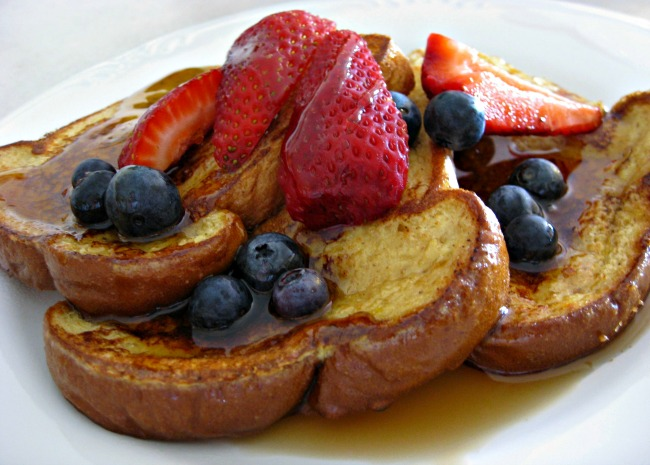

French Toast

Description
There are many, fancy variations on this basic recipe. This recipe works with many types of bread - white, whole wheat, cinnamon-raisin, Italian or French. Serve hot with butter or margarine and maple syrup.
Ingredients
- 6 thick slices bread
- 2 eggs
- ⅔ cup milk
- ¼ teaspoon ground cinnamon (Optional)
- ¼ teaspoon ground nutmeg (Optional)
- 1 teaspoon vanilla extract (Optional)
- salt to taste
Steps
- Beat together egg, milk, salt, desired spices and vanilla.
- Heat a lightly oiled griddle or skillet over medium-high heat.
- Dunk each slice of bread in egg mixture, soaking both sides. Place in pan, and cook on both sides until golden. Serve hot.